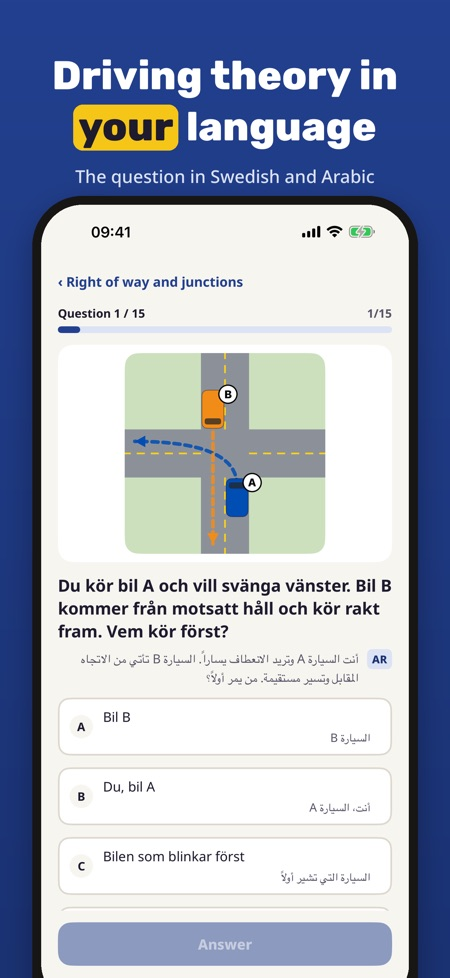
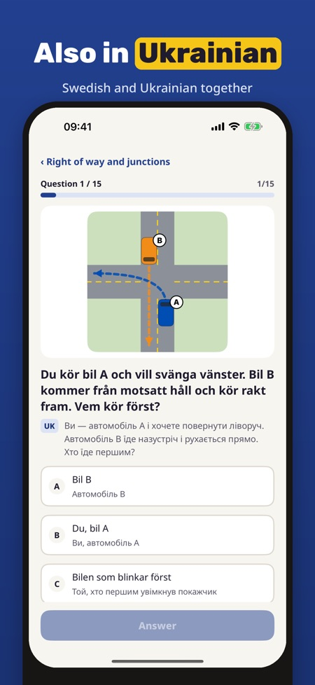
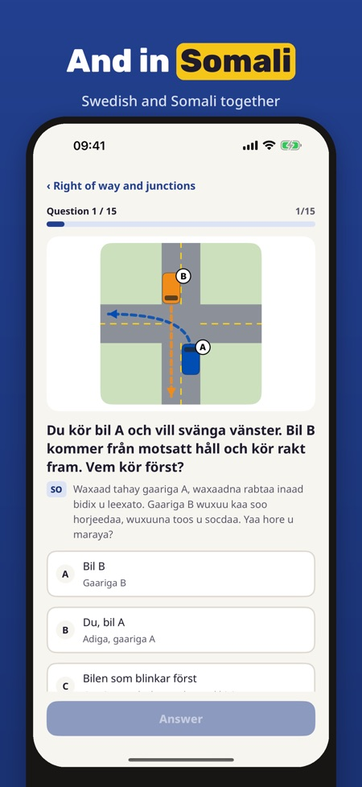

In Arabic, Ukrainian, Somali. Practise driving theory with each question in the local language and in yours: Arabic, Ukrainian, Somali, Persian or English. Learn the words, take a mock test.



Teoriklar helps you practise the theory test for the car (B) driving licence in Sweden, Norway, Denmark or Finland when the local language is not your first language: every question is shown in Swedish, Norwegian, Danish or Finnish and, right under it, in your own language – Arabic, Ukrainian, Somali, Persian (Farsi) or English.
You can practise 20 questions, take one full mock test and use the glossary and checklist without purchase. The full version is a one-time purchase that unlocks all questions, mock tests and statistics. No subscription.
Teoriklar is independent and not affiliated with Trafikverket, Transportstyrelsen, Statens vegvesen, Færdselsstyrelsen, Traficom or Ajovarma. The questions and translations are our own. The real test is booked with the authority in your country.